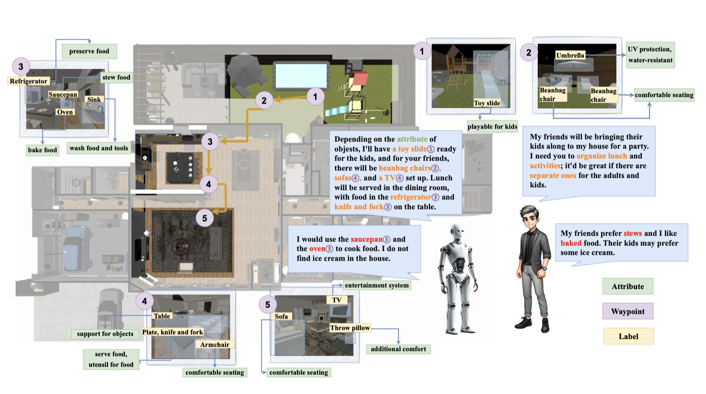

|
Peiqi Liu | 刘沛淇 I'm a junior undergraduate student major in computer science at Peking University, advised by Prof. Hao Dong as a part of PKU-Agibot Lab. Currently I am a visiting student in MIT CSAIL, where I was advised by Jiayuan Mao, Prof. Leslie Pack Kaelbling and Prof. Josh Tenenbaum. |

|
ResearchThe goal of my research is to empower robots to assist humans in their daily lives, with a particular focus on enabling them to explore unfamiliar environments, execute long-horizon plans, and manipulate objects with precision. My research interests include planning, representation learning, navigation and imitation learning. |
|

|
MO-DDN: A Coarse-to-Fine Attribute-based Exploration Agent for Multi-object Demand-driven Navigation
Hongcheng Wang, Ruiqi Gao, Ben Poole, Alex Trevithick, Changxi Zheng, Jonathan T. Barron, Aleksander Holynski arXiv, 2024 project page / arXiv An approach for turning a video into a 4D radiance field that can be rendered in real-time. When combined with a text-to-video model, this enables text-to-4D. |
Experience |